1. Executive Summary
This report revalidates the plant's SPC chart design on the 1 July 2025 to 30 June 2026 record: 1,427 active SPC charts on 11 presses, 1,380 on part characteristics and 47 on press tonnage, 379,677 subgroups and 90.9 million production strokes. It asks three questions of the charts, in the order of Section 2: what is charted and on what chart type; how each chart's type and limits follow from where its variation lies and how the limits are set, held and verified; and whether each chart signalled when the process changed and stayed quiet when it did not. The per-stroke tonnage charts are taken through the same three questions alongside the characteristic charts. Performance is tested by comparing each chart's signals with the rate its own rules and baseline size predict on an unchanged process, on intervals with no special cause, so a chart type on the wrong variance structure shows as a rate far from expectation. Variation is tested by decomposing each class into within-subgroup, between-subgroup, between-coil and wear components and checking the chart type against where the variance lies.
Section 3 asks the same three questions of one part family, the three C110 copper parts on PR-03: 27 charts on three dies and three check fixtures. The plant is reported at summary level because 1,380 charts cannot be shown one at a time; the family is where every chart, baseline, limit set, fit and stop is shown in full, so the plant-level rates can be read against the records that produce them.
On both scopes the chart selection holds. Every special cause in the record was caught by the chart designed for it and every alarm was closed by 30 June: on the plant, 1,657 routine alarms on 58 runs with a cause found, one soft coil, one mislogged sharpening and 427 die and punch events stopped on the stroke (Table 2); on the family, one die at a new level, one fixture drifting, one rebuild and the soft coil (Table 3). On intervals with no special cause the charts signalled close to their design rate on both scopes, with the same departures for the same reasons: on the plant, regression charts above expectation on level changes at sharpening that pass verification; on both, three-way charts below it because their limits carry the residual coil offset by design; and the family's cut-geometry charts above it on rules 3 and 4 under limits held across sharpenings.
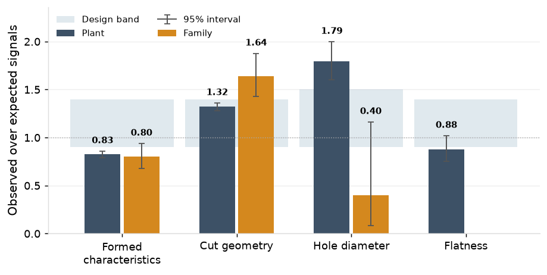
The variance structure is the one each chart assumes on every measured class (2.2), and the family's characteristics show it one at a time (3.2). Verification of limits held across 408 sharpenings failed on 8.1%, each a real level change. PR-03's per-stroke charts stopped it 97 times with the chipped punches caught at a median 0 strokes from the onset; its nothing-found rate, 2.21 per million strokes against 1.02 for the plant, is the one family figure outside the plant's pattern.
Two actions follow: the 23 three-way limit sets issued at the annual review on fewer than ten coil changes are re-issued as ten accrue, and the regression charts' verification criterion is tightened to 1.0 sigma with the line re-fitted at each planned trigger.
2. SPC Chart Summary
Overview
As of June 2026, there are 1,427 active SPC charts across the 11 presses. 1,380 are on part characteristics in five classes: cut geometry (hole position and part length and width), formed characteristics (formed heights and bend angles), hole diameter, sheared edges, and flatness. 897 (65%) of these are variable charts, plotting dimensions read off a gauge; 483 (35%) are attribute charts, tallying pass/fail pin checks on hole diameters and burr checks on sheared edges. The other 47 charts are on press tonnage: an EWMA on each press's per-stroke total and a chart on each load channel's share of it.

Each SPC chart belongs to one characteristic on an individual part, and each part carries an average of 8 charts. The shop's parts fall into six programs. Automotive is the largest at 48 parts and 373 charts, HVAC the smallest at 12 and 90. The C110 family, detailed in Section 3, sits in appliance (P-15731) and automotive (P-11333, P-14026).

Each part is assigned to one press. Presses carry up to 20 parts each, with PR-03, PR-06 and PR-09 being dedicated presses that run only their ten assigned parts. Each press carries three or five tonnage charts, one for its total and one for each load channel.

Each chart collects subgroup measurements only while its part is running. The frequency of measurements differs by press: every 30 minutes on the high-speed presses and every 60 on the others. PR-03 produces 750 subgroup measurements a week (18% of total) because it has 16% more running hours a week than the other high-speed presses.

Chart design
Each class runs on the chart its variation calls for, so the design starts with where the variance lies. The year's record was decomposed, class by class, into within-subgroup, between-subgroup, between-coil and wear components, and the four variable classes differ enough that no one chart serves them all: cut geometry and flatness are piece-to-piece noise (97% within the subgroup); formed characteristics (formed heights and bend angles) carry a coil offset (13.5% after centring, 49.7% before it); hole diameters carry a wear trend (36.2%). Between-interval shares are nil on every class.
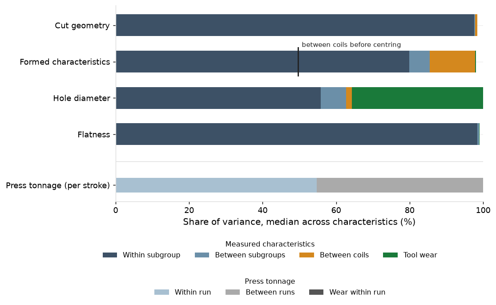
Design of SPC charts
X-bar and R (cut geometry and flatness)
Cut geometry and flatness have no between-subgroup component, so each subgroup's mean is plotted against limits set from the within-subgroup ranges, the more precise estimate, and the range against its own limit. Western Electric rules 1 to 4 run on the means, because nothing shifts the level from one subgroup to the next in normal running. 474 charts run this way. The one exception found is C-34479-05, a hole position with 35.2% of its variance between coils, moved to a three-way chart on 9 March 2026.

Three-way (formed characteristics)
Formed characteristics move with the coil. Thickness and hardness on the coil certificate explain the coil means with a median R squared of 0.82 across 242 characteristics, so the die is centred on a 10-piece subgroup at every coil change, and a coil-change chart, one point per coil with limits from the coils on record (the previous 20 once there are that many), checks each coil before the routine chart sees it. Centring leaves a residual offset of 39.1% of the variance of the subgroup means, and the limits must carry it. The three-way chart plots each subgroup mean as an individual value against limits set from the standard deviation of the baseline means, which include that offset; limits from the average moving range would not, and would signal on 1.57 in-control points per 100 against the 0.27 of the limits in force. Rules 2 to 4 are off on the individuals chart, because the coil steps would trip them. Beside it, the moving-range chart watches the change between consecutive means, and the range chart the spread within each subgroup. 399 charts run this way. In the sample, the level steps at each coil change and stays inside the individuals limits.

Regression (hole diameter)
A pierced hole grows as the punch edge wears between sharpenings, at a rate predictable from the shots since the die was sharpened, so the 23 measured hole diameters run on regression charts. The centre line is the regression of diameter on shots since sharpening, fitted over the die's earlier intervals, with limits three residual sigmas either side: the chart asks whether each subgroup sits where the wear line predicts, not whether the hole has grown, so it signals on what is not wear. The line resets at each sharpening and is re-fitted at each verification that passes, with the limit width held. Wear rates run from 0.0041 to 0.0100 mm per 100,000 shots across the 19 charted holes; six rest on a single sharpening interval.

p charts (pin and burr checks)
The other 303 hole diameters are checked with a go/no-go pin rather than measured, and every part's sheared edge is checked for burr by the operator: each piece passes or fails, and the fails in a check of 5 pieces are tallied on a p chart against limits set from the baseline fail rate. Unlike the measured holes, a pin check cannot see a hole growing toward its limit, only a hole that has passed it. At the year's fail rates, 0.12% on burr checks and 0.09% on pin checks, the upper limit of a 5-piece check sits at about 4.8% and 4.0%, so a single failed piece is a signal: the p chart works as a rule that every nonconforming piece is investigated (the sample shows the pattern: zeros, and a single failed piece far above the limit), raising a signal on about 0.6 and 0.4 checks in 100, and it cannot show a rising fail rate before pieces fail. The control on these features is upstream: burr height is measured on the laboratory gauge on 180 characteristics and controlled by the sharpening count, with no chart, and the critical holes run on the regression charts above. The SPC export carries the p charts' counts but not their limits, so the limits here are computed from the fail rates.

Per-stroke tonnage
The press monitor reads the load on each upright every stroke. An EWMA on the per-stroke total (lambda 0.02, L 5.5) accumulates small drops such as a chipped punch's, and a residual chart on each channel's share catches the shift of load toward the corner nearest the break. The total is autocorrelated at lag 1 by 0.60 and varies by 1.49% within a run, so the EWMA runs on the AR(1)-adjusted variance. Limits are set at each run start from the first 500 production strokes, 2,219 times in the year, and are not held across runs, because the tonnage level belongs to the setup, not the part. At known parameters the in-control ARL is 77.8 million strokes and 2.64 million with the parameters estimated; L 4.9 would give about one false stop in eight shifts on PR-03.

Setting and holding limits
The rules below govern the 1,380 characteristic charts; the tonnage charts set theirs per run, as above.
Setting and holding the limits. A characteristic chart's limits come from a Phase I baseline of 25 subgroups, spanning at least ten coil changes on a three-way chart; subgroups outside the baseline's own limits are screened (94 in 64 baselines in the year) and the means tested for normality (92.9% pass). The limits are then held, and a sharpening does not reset them: the first 25 subgroups after it verify them, and only a failed verification, a rebuild or the annual review starts a new baseline; a regression chart's planned trigger re-fits its line instead. Formed charts are verified after a rebuild or forming-station repair only, since sharpening does not touch the forming stations. The die log carries dates without times, so a run is placed by the last sharpening dated on or before its start day; 15 of 1,399 runs start on a sharpening day and 92 span one. At 30 June 16 charts are in a baseline and none is past its recalculation trigger.
Gauges. Every variable chart runs on a gauge in gating status: 180 check fixtures, 29 calipers and 12 indicators, each with a current calibration and a gauge study on file, 825 charts on a study of the gauge itself and 72 on a study of the gauge type at the press. The pin checks run on 35 calibrated pin gauges.
The year's limit sets. 319 new sets were issued on the 897 variable charts (671 run on limits issued before the record, 226 on limits issued in the year): 146 after rebuilds, spread through the year; 74 at the annual review of 19 January, 71 of them in January to March; 65 regression lines re-fitted; 34 after a failed verification. Two charts changed design: C-34479-05 above, and C-15731-02's recalculation trigger, shortened from 30 to 20 subgroups from 8 December 2025 after its intervals shortened under the burr line.
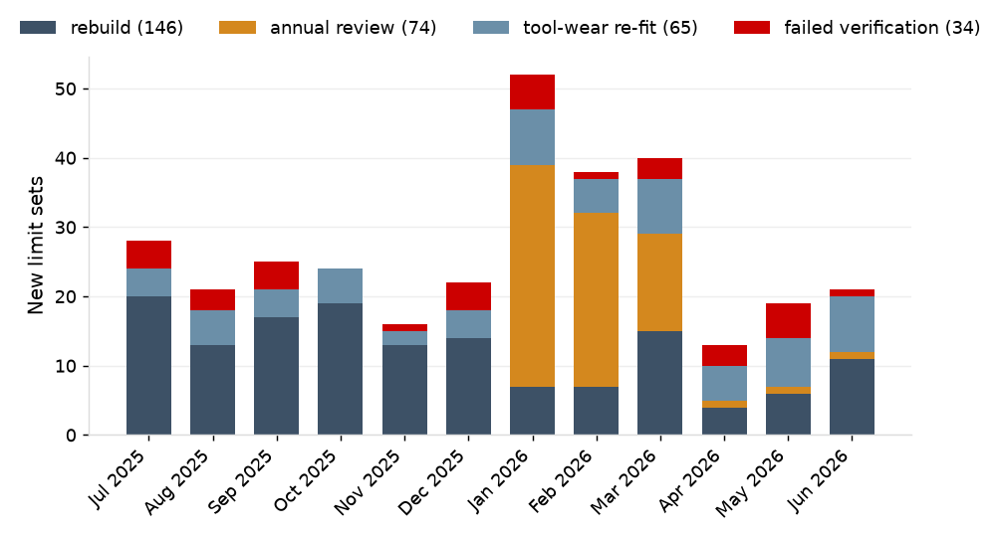
Verification held the limits across 408 sharpenings and failed on 33 of them (8.1%), inside its design range of 3% to 9%; by chart, 34 of 1,100 X-bar and R (3.1%), 2 of 67 regression (3.0%) and 3 of 141 three-way after rebuild (2.1%). The passes sit at a median 0.21 sigma from centre, and the chance of a false failure is under 0.001%, so each failure is a die that came back at a different level.
| Verification | Verifications | Failed | Failure rate |
|---|---|---|---|
| X-bar and R, after sharpening | 1,100 | 34 | 3.1% |
| Regression, after sharpening | 67 | 2 | 3.0% |
| Three-way, after rebuild | 141 | 3 | 2.1% |
| By sharpening, any chart of the die | 408 | 33 | 8.1% |
The annual review's three-way sets. 23 of the 45 three-way sets issued at the review span one to nine coil changes, because the review computed on a trailing window of 50 to 978 subgroups rather than the ten-coil baseline rule. Their centre lines are sound; their limits understate the coil offset. They are re-issued as ten coil changes accrue.
Performance
A chart has two jobs: signal when the process has changed, and stay quiet when it has not. A reading can trigger three things. A signal is a point beyond a control limit, or a run-rule pattern, saying the process may have changed. A special cause is a change found behind a signal that calls for a fix to the process. An out-of-tolerance piece is a part beyond the drawing's limits, contained whatever the chart shows. Control limits come from the process's own variation and sit well inside the tolerance on a capable process, so most signals arrive while the parts are still good. Whether the processes are good enough for the drawing is a capability question, reported quarterly in the SPC Quarterly Review: in April to June 2026, 93 of 100 critical characteristics ran above Ppk 1.33.
What the charts flagged
In the year the routine characteristic charts raised 12,156 signals, the coil-change chart 28, and the tonnage charts stopped the presses 520 times. 145 measured pieces fell outside tolerance, and the attribute checks failed 268 pieces on burr and 278 on pins. Most signals had no assignable cause, as the design expects; 489 events led to a special cause.

Signals with a special cause
489 events in the year were traced to a special cause, each by the chart designed for it: on the routine charts, 53 runs where a die came back from sharpening or rebuild at a new level and its verification failed, one drifting fixture (F-14026), and 6 runs with a strip misfeed, slug pull, gauge zero or lubricant fault; the coil-change chart's soft coil on C-15731-07; the regression chart's sharpening logged at the wrong count on PR-06; and 427 tonnage stops on slug pulls, worn punches and chipped punches. Every alarm was closed by 30 June. The record carries no customer returns. Of the 161 nonconformances in the year, the 62 on runs with no special cause were caught by controls the charts are not built for: 54 at first-piece approval, before production began, and 8 mixed-part and packaging errors at the press check.
| What was caught | Chart | Events | Alarms |
|---|---|---|---|
| Die at a new level after sharpening or rebuild | X-bar and R, three-way, regression, with verification | 53 runs | 1,620 |
| Fixture drift (F-14026) | X-bar and R, three-way | 1 run | 30 |
| Strip misfeed, slug pulling, gauge zero, lubricant | X-bar and R, three-way | 6 runs | 7 |
| Sharpening logged at the wrong count (PR-06) | regression | 1 | 1 |
| Soft coil (C-15731-07) | coil-change | 1 | 1 |
| Slug pulling, worn and chipped punches | per-stroke EWMA and channel share | 427 stops | 427 |
Signals with no assignable cause
10,499 routine signals, 27 coil-change signals and 93 tonnage stops closed with nothing found. They are the cost of the design: a point from an unchanged process crosses a three-sigma limit by chance about once in 370, and the run rules add more, so a stable plant still signals. The parts behind them are almost always good, since the control limits sit inside the tolerance, and the right response is to look, then leave the process alone; adjusting a process that has not changed adds variation.
The design expects 133 such signals a week across the plant, 3.1 per 100 routine subgroups, and they fall where the subgroups are: PR-03 expects 23.7 a week on its 750 subgroups against a plant median of 12.9.
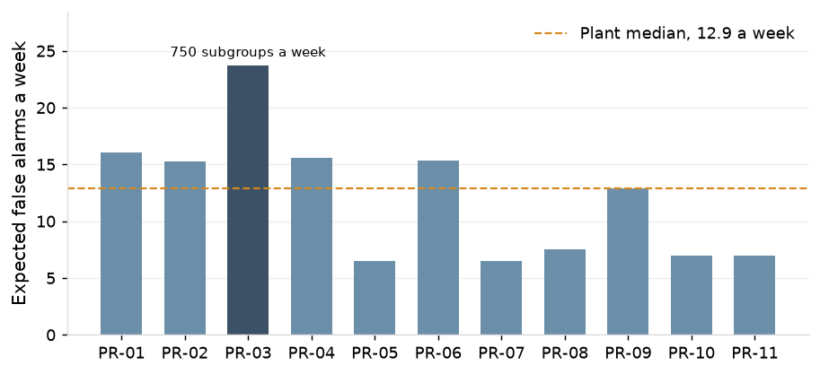
The rules set that rate. Under rule 1 alone an X-bar chart signals once in 370 in-control subgroups and catches a one-sigma shift in 44; with rules 1 to 4 it signals once in 92 and catches the shift in 9. Limits estimated from 25 subgroups move both figures, to 407 and 74. The three-way chart's curve sits above the X-bar chart's at small shifts, which is the detection cost of carrying the coil offset in its limits.
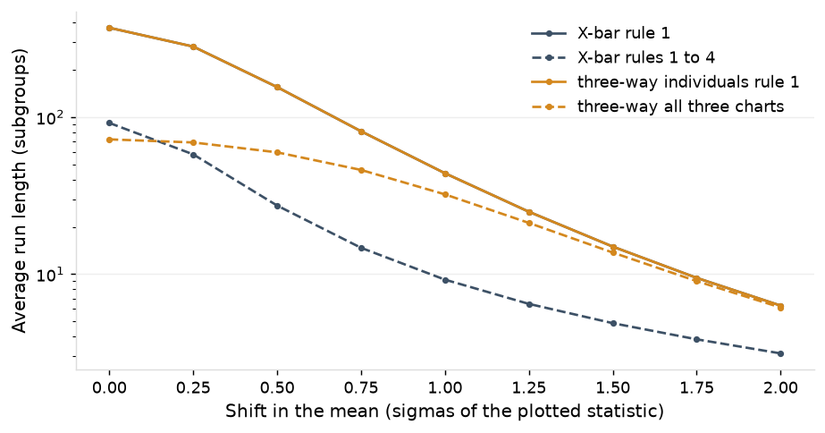
Observed against expected. On charts with no special cause in the interval, the year's signals ran close to the design rate on every class, and the departures have reasons the record shows. Cut geometry ran at 1.32 times expectation and flatness at 0.88, inside chance at 5,738 subgroups (0.75 to 1.02). Hole diameter ran at 1.79 and formed characteristics at 0.83, both beyond chance: the regression charts signal on level changes at sharpening of up to 1.5 sigma that pass verification and then run under the old line, and the three-way charts carry the residual coil offset in their limits by design, so rule 1 signals less often than an independent process would. The 483 p charts are outside the comparison: the export carries their counts but no limits or alarm flags. The burr checks recorded 268 nonconforming pieces in 219,535 and the pin checks 278 in 324,225.
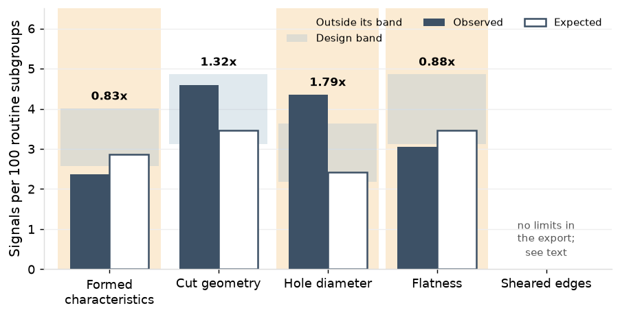
The excess on X-bar and R and regression charts is on rules 3 and 4 (1.39 and 2.09 per 100 against 0.45 and 0.78 at known parameters on X-bar and R; 1.20 and 2.37 on regression), which is what limits held across sharpenings produce: small persistent offsets, from operator reproducibility on the fixture or a part running on another press, accumulate run-rule signals that a recomputed chart would absorb, and 14 of 1,131 verification passes on these charts lie between 1.0 and 1.5 sigma.
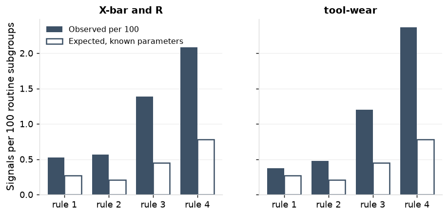
By press, PR-01 and PR-09 run furthest above expectation (3.91 against 3.18 per 100, and 3.46 against 2.81) and PR-10 furthest below (2.60 against 3.26); the other eight sit within 0.7 per 100.
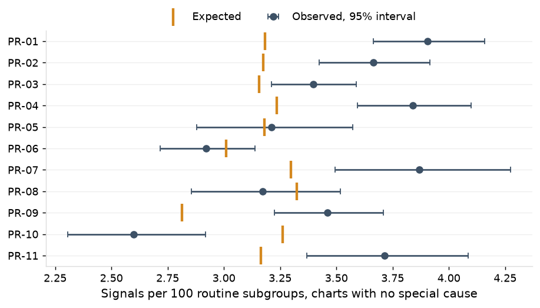
Subgroup means within a coil carry a median lag-1 autocorrelation of -0.07 (10th to 90th percentile -0.19 to 0.02). Across that range the in-control ARL under rules 1 to 4 runs from 142 to 87, 109 at the median against 92 with none, and rule 1 does not move, so the limits need no adjustment for it.
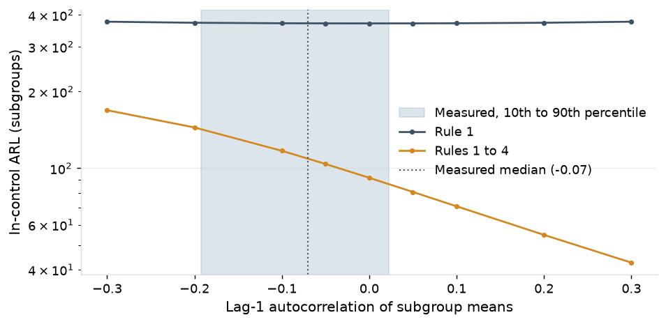
The coil-change chart raised 28 rule 1 signals in the year, 27 with no assignable cause and one the soft coil on C-15731-07 on 27 May 2026. On the 2,292 points with six or more coils on record it raised 18 against 12.1 expected (1.49 times, interval 0.88 to 2.35); the expectation is above the independent rate because coils arrive in lots of one to four that share 76% of the coil variance, and the other ten signals sit on points whose limits rest on coils before the record.
Out-of-tolerance pieces
145 measured pieces fell outside tolerance in the year, 131 per million measured: 49 on runs with a special cause and 96 on runs without one, the rejects a stable process makes at its capability. Formed characteristics run highest, at 176 per million, and cut geometry at 104; hole diameter and flatness had none. 57 of the 142 subgroups holding one raised a chart signal; in the others a single piece crossed the tolerance while its subgroup's mean and range stayed inside their limits, since the charts judge the process, not each part. The record carries no tolerance flag at entry, so containment shows only where a nonconformance was raised, on 19 of the 119 runs. The attribute checks failed 268 of 219,535 pieces on burr and 278 of 324,225 on pins, 112 of them on runs with a special cause.
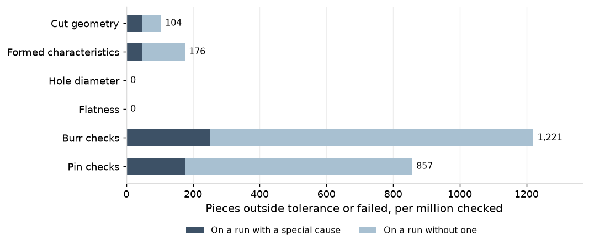
Per-stroke charts: speed of detection
A chipped punch drops the per-stroke total by a median 3.06% and moves the largest channel share by 1.32 points; at that shift the EWMA signals in 38 strokes and the channel-share chart usually on the stroke of the break. Lambda 0.02 is the choice for shifts of 2% to 3%: at a 2% step it signals in 76 strokes against 117 at 0.05 and 425 at 0.10. On the 204 stops with strokes kept, chipped punches were stopped at a median 0 strokes from the onset, 90th percentile 20; the EWMA caught 8 and the channel-share chart 63. Under an hourly check the same failures would have exposed up to 6,499 parts at the median press and 11,773 on PR-03.
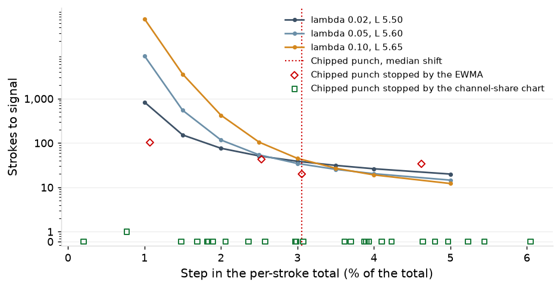

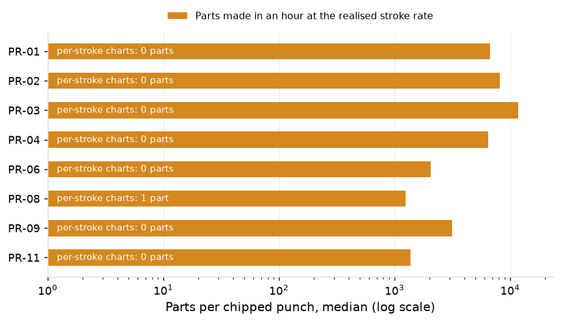
Actions.
- 23 of the 45 three-way limit sets issued at the annual review span fewer than ten coil changes; they are re-issued as ten coil changes accrue (2.2).
- The regression charts' verification criterion is tightened to 1.0 sigma, since the level change at sharpening is the larger part of their excess, and the line is re-fitted at each planned trigger as well as at each passed verification (2.3).
3. Part Family
The three C110 copper parts on PR-03 (P-11333 on D-1333-C, P-15731 on D-5731-A, P-14026 on D-4026-A) are followed through the same three headings as the plant.
Overview
The family's three parts carry 27 of the plant's 1,380 charts: 12 formed heights and bend angles on three-way charts, 7 cut geometry on X-bar and R, 5 hole diameters (one on a regression chart, C-15731-02, and four on pin checks) and 3 sheared edges on burr checks. The register, with each chart's limits basis, gauge, study and status, is in the appendix. PR-03 carries 3 per-stroke charts, an EWMA on the total and 2 channel-share charts.
Chart design
The family's twenty measured characteristics show the plant's structure one at a time: the formed heights and bend angles carry between-coil shares of 7% to 31% on the routine record and 22% to 52% incoming, the hole positions 0% to 6%, and the one measured hole diameter, C-15731-02, a 23.5% wear trend. Each sits on the chart its class calls for: 12 three-way, 7 X-bar and R, 1 regression, with 4 pin checks and 3 burr checks on p charts.
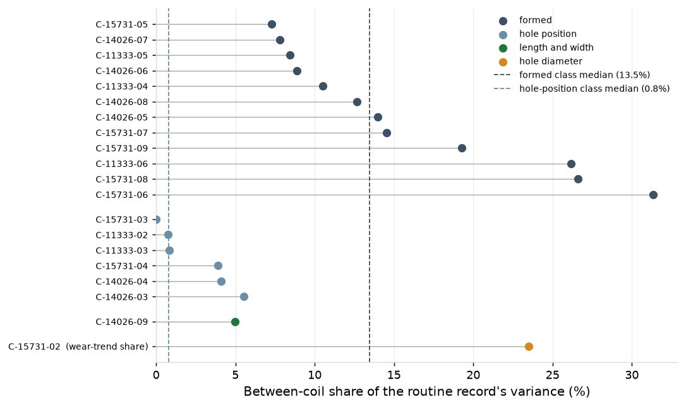
The coil effect. It is predictable from the certificate on the 7 of the family's 12 formed characteristics with a fit on record; the other five, all on P-15731, carry 13 coil-change subgroups in the year, fewer than the 20 the fit requires. On C-11333-05 the fit is 2.73 mm of height per mm of thickness and -0.0094 mm per HRB, R squared 0.814 on 20 subgroups over 9 coils, residual 3.2% of tolerance against coil means that spread 9.3%.
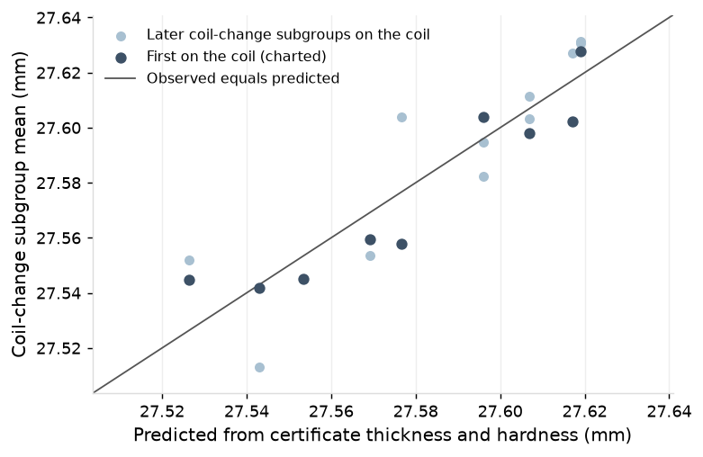
A baseline. The baseline on C-11333-02, taken on the run of 11 May 2026 after the rebuild of 9 May, shows the procedure: 25 routine subgroups, limits 24.381 to 24.435 mm on the means and a range limit of 0.0988 mm, Anderson-Darling 0.53 against 0.73. Subgroup 18 carries a range of 0.106 mm, beyond the range limit; it is flagged and kept, and without it the mean limits move by under 0.002 mm.
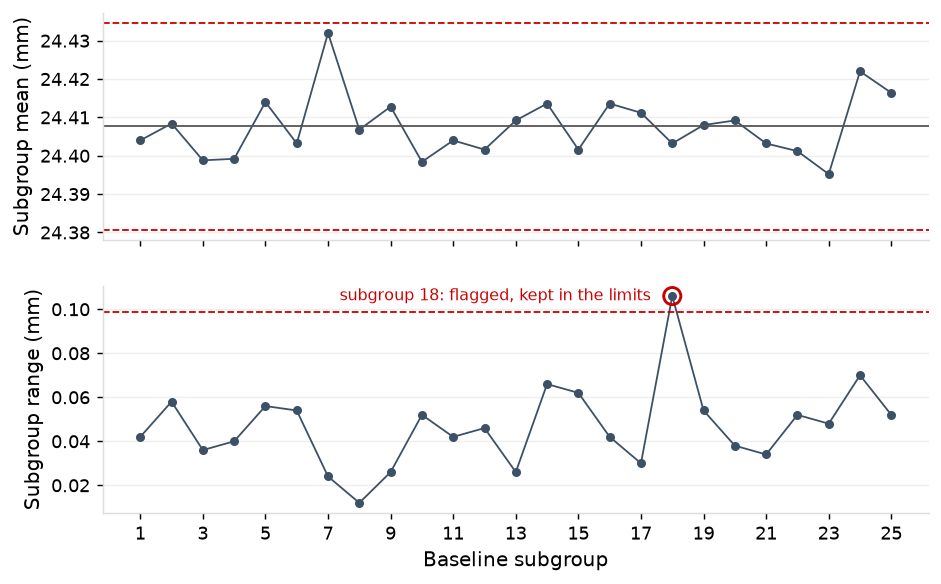
The regression line. On C-15731-02 the line in force (27 May 2026) runs at 0.0058 mm per 100,000 shots from 9.4555 mm with a band of plus and minus 0.0060 mm; the chart ran on ten limit sets in the year, listed in the appendix.
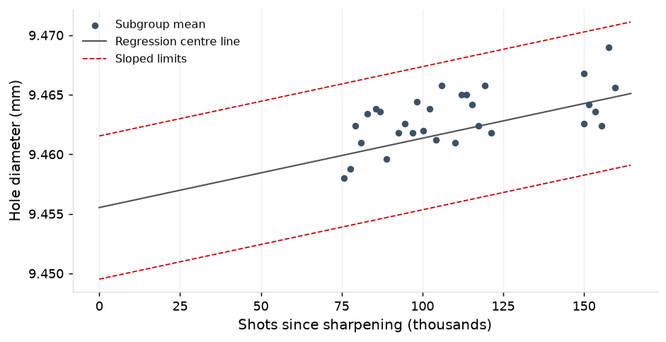
The year's limit sets. 20 sets were issued on the family's charts: 9 after rebuilds, 7 regression re-fits, 3 at the annual review and 1 after a failed verification. Verifications on the three dies: 51 X-bar and R after sharpening with none failed, 8 regression with 1 failed on D-5731-A, 16 three-way after rebuild with 3 failed, all on D-4026-A; by sharpening, 1 of 23. PR-03's per-stroke limits were set at 151 run starts; its total runs at a lag-1 autocorrelation of 0.59 and 1.49% within a run, against 0.60 and 1.49% across the plant.
Gauges. 18 of the 20 measured charts run on the part's own check fixture, the other two on a caliper and an indicator. F-15731 stands at 6.0% of tolerance (2 April 2026) and F-14026 at 5.3% (17 June, after the rebuild that followed its 3 June restudy at 16.7%); F-11333 at 16.3% (5 May) is in service with a restudy due 17 August.
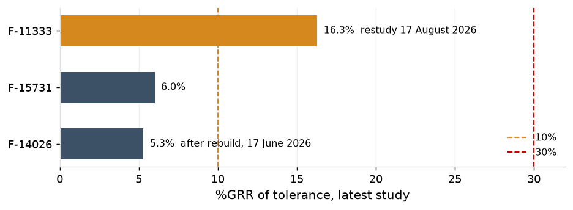
Performance
The family's charts are judged as the plant's above. Its capability, with Ppk and 95% intervals for its critical characteristics, is in the SPC Quarterly Review.
What the charts flagged
The family's routine charts raised 764 signals in the year and its coil-change chart one; the tonnage charts stopped PR-03 97 times across every part it ran. 1 of the family's measured pieces fell outside tolerance, and its attribute checks failed 14.
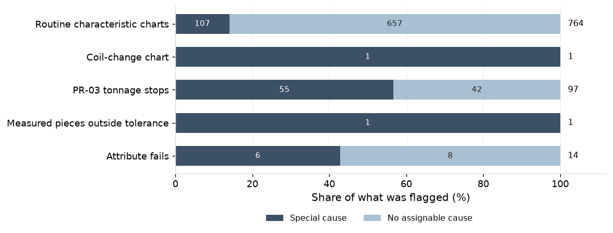
Signals with a special cause
The family's charts traced 4 events to a special cause: 107 routine alarms on 3 runs closed with a cause: 54 on one run where D-5731-A came back from sharpening at a new level and its verification failed, 30 on one run of P-14026 as F-14026 drifted, and 23 on two runs of P-14026 after its rebuild, whose verification failed on three of the die's four three-way charts. The coil-change chart caught the soft coil on C-15731-07 on 27 May.
| What was caught | Chart | Events | Alarms |
|---|---|---|---|
| D-5731-A at a new level after sharpening | regression, with verification | 1 run | 54 |
| F-14026 drifting | X-bar and R, three-way | 1 run | 30 |
| P-14026 at a new level after rebuild | three-way, with verification | 2 runs | 23 |
| Soft coil on C-15731-07 | coil-change | 1 coil | 1 |
Signals with no assignable cause
657 routine signals and 42 PR-03 stops closed with nothing found; every alarm was closed by 30 June. Overall the family's charts ran at 1.13 times expectation, with the excess on one class.
On charts with no special cause, 10,369 routine subgroups raised 368 signals against 327 expected (1.13, interval 1.01 to 1.25). Formed ran at 0.80 for the reason the plant's three-way charts do; hole diameter at 0.40 on 296 subgroups, inside chance; cut geometry at 1.64 (1.43 to 1.88), beyond chance, with the excess on rules 3 and 4 as on the plant's X-bar and R charts.
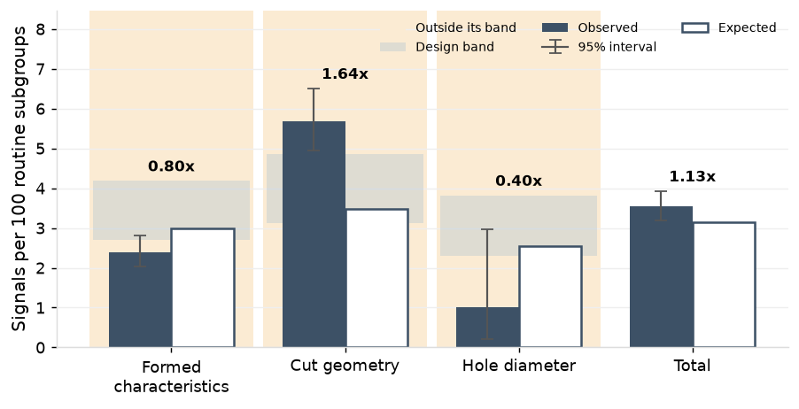
Out-of-tolerance pieces
One measured piece fell outside tolerance in the year, 18 per million measured: one on a run with a special cause and none on runs without one. Cut geometry carried it; formed characteristics, hole diameter and flatness had none. It raised a chart signal. The record carries no tolerance flag at entry, so containment shows only where a nonconformance was raised, as one was on its run. The attribute checks failed 3 of 9,210 pieces on burr and 11 of 11,835 on pins, 6 of them on runs with a special cause.
Per-stroke charts on PR-03
The charts stopped PR-03 97 times across every part it ran: 34 on slug pulling, 10 on a worn punch, 11 on a chipped punch and 42 with nothing found. Ten chipped punches were stopped at 0 strokes by the channel-share chart and one at 34 strokes by the EWMA, the 13 May stop on run R26-00820 at stroke 239,498, on a punch found chipped and replaced; the press restarted at 11:55. PR-03's nothing-found rate is 2.21 per million strokes against 1.02 across the plant.
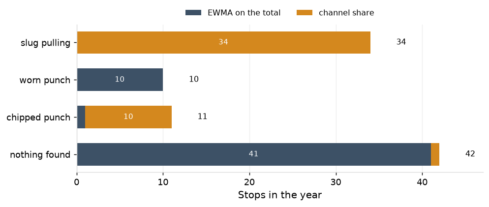
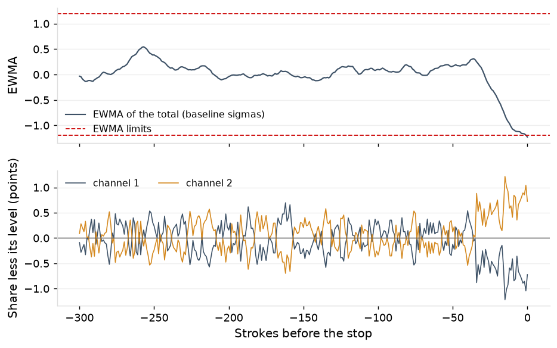
Appendix
| Characteristic | Chart | Limits basis and date | Status | Gauge | Study basis | Study | %GRR | Restudy due | Check, minutes | Reaction plan | Coil-change chart |
|---|---|---|---|---|---|---|---|---|---|---|---|
| C-11333-01 | p | G-0138 | 30 | ||||||||
| C-11333-02 | Xbar-R | X-bar and R baseline, 11 May 2026 (rebuild) | in force | F-11333 | this gauge | 5 May 2026 | 16.3 | 17 August 2026 | 30 | rule 1; rules 2 to 4 | |
| C-11333-03 | Xbar-R | X-bar and R baseline, 11 May 2026 (rebuild) | in force | F-11333 | this gauge | 5 May 2026 | 16.3 | 17 August 2026 | 30 | rule 1; rules 2 to 4 | |
| C-11333-04 | three-way (I-MR-R) | three-way baseline, 11 February 2026 (annual review) | in force | F-11333 | this gauge | 5 May 2026 | 16.3 | 17 August 2026 | 30 | coil change; rule 1 | 22.9581 (22.8258 to 23.0905), 9 coils |
| C-11333-05 | three-way (I-MR-R) | three-way baseline, 26 May 2024 (baseline before the record) | in force | F-11333 | this gauge | 5 May 2026 | 16.3 | 17 August 2026 | 30 | coil change; rule 1 | 27.5672 (27.4418 to 27.6926), 9 coils |
| C-11333-06 | three-way (I-MR-R) | three-way baseline, 11 April 2024 (baseline before the record) | in force | F-11333 | this gauge | 5 May 2026 | 16.3 | 17 August 2026 | 30 | coil change; rule 1 | 59.9942 (59.5532 to 60.4352), 9 coils |
| C-11333-07 | p | LS-11333 | 30 | ||||||||
| C-14026-01 | p | G-0138 | 30 | ||||||||
| C-14026-02 | p | G-0139 | 30 | ||||||||
| C-14026-03 | Xbar-R | X-bar and R baseline, 29 May 2026 (rebuild) | in force | F-14026 | this gauge | 17 June 2026 | 5.3 | 30 | rule 1; rules 2 to 4 | ||
| C-14026-04 | Xbar-R | X-bar and R baseline, 29 May 2026 (rebuild) | in force | F-14026 | this gauge | 17 June 2026 | 5.3 | 30 | rule 1; rules 2 to 4 | ||
| C-14026-05 | three-way (I-MR-R) | three-way baseline, 3 December 2024 (baseline before the record) | in a baseline | F-14026 | this gauge | 17 June 2026 | 5.3 | 30 | coil change; rule 1 | 11.1632 (10.9544 to 11.3719), 13 coils | |
| C-14026-06 | three-way (I-MR-R) | three-way baseline, 6 September 2024 (baseline before the record) | in a baseline | F-14026 | this gauge | 17 June 2026 | 5.3 | 30 | coil change; rule 1 | 23.3802 (23.1296 to 23.6308), 13 coils | |
| C-14026-07 | three-way (I-MR-R) | three-way baseline, 25 June 2024 (baseline before the record) | in force | F-14026 | this gauge | 17 June 2026 | 5.3 | 30 | coil change; rule 1 | 45.0177 (44.6269 to 45.4084), 13 coils | |
| C-14026-08 | three-way (I-MR-R) | three-way baseline, 30 September 2024 (baseline before the record) | in a baseline | F-14026 | this gauge | 17 June 2026 | 5.3 | 30 | coil change; rule 1 | 90.0444 (89.4626 to 90.6262), 13 coils | |
| C-14026-09 | Xbar-R | X-bar and R baseline, 29 May 2026 (rebuild) | in force | G-0150 | this gauge | 18 February 2026 | 7.7 | 30 | rule 1; rules 2 to 4 | ||
| C-14026-10 | p | LS-14026 | 30 | ||||||||
| C-15731-01 | p | G-0138 | 30 | ||||||||
| C-15731-02 | regression | regression line, 27 May 2026 (regression re-fit) | in force | G-0147 | gauge type at the press | 4 May 2026 | 7.4 | 30 | rule 1; rules 2 to 4 | ||
| C-15731-03 | Xbar-R | X-bar and R baseline, 25 September 2025 (rebuild) | in force | F-15731 | this gauge | 2 April 2026 | 6.0 | 30 | rule 1; rules 2 to 4 | ||
| C-15731-04 | Xbar-R | X-bar and R baseline, 25 September 2025 (rebuild) | in force | F-15731 | this gauge | 2 April 2026 | 6.0 | 30 | rule 1; rules 2 to 4 | ||
| C-15731-05 | three-way (I-MR-R) | three-way baseline, 20 July 2024 (baseline before the record) | in force | F-15731 | this gauge | 2 April 2026 | 6.0 | 30 | coil change; rule 1 | 17.4757 (17.1098 to 17.8415), 5 coils | |
| C-15731-06 | three-way (I-MR-R) | three-way baseline, 24 June 2024 (baseline before the record) | in force | F-15731 | this gauge | 2 April 2026 | 6.0 | 30 | coil change; rule 1 | 3.7281 (3.5056 to 3.9505), 5 coils | |
| C-15731-07 | three-way (I-MR-R) | three-way baseline, 18 June 2024 (baseline before the record) | in force | F-15731 | this gauge | 2 April 2026 | 6.0 | 30 | coil change; rule 1 | 14.8026 (14.6066 to 14.9986), 5 coils | |
| C-15731-08 | three-way (I-MR-R) | three-way baseline, 24 July 2024 (baseline before the record) | in force | F-15731 | this gauge | 2 April 2026 | 6.0 | 30 | coil change; rule 1 | 60.0458 (58.9288 to 61.1628), 5 coils | |
| C-15731-09 | three-way (I-MR-R) | three-way baseline, 15 October 2024 (baseline before the record) | in force | F-15731 | this gauge | 2 April 2026 | 6.0 | 30 | coil change; rule 1 | 60.0058 (59.3506 to 60.6611), 5 coils | |
| C-15731-10 | p | LS-15731 | 30 |
| Characteristic | Name | Routine subgroups | Coils | Within | Between subgroups in a coil | Between coils | Between intervals | Incoming coil share | Wear trend | Chart | Gauge | Gauge type |
|---|---|---|---|---|---|---|---|---|---|---|---|---|
| C-11333-02 | hole to edge B | 937 | 20 | 99.2% | 0.0% | 0.8% | 0.0% | Xbar-R | F-11333 | check fixture | ||
| C-11333-03 | hole to hole C | 937 | 20 | 99.2% | 0.0% | 0.8% | 0.0% | Xbar-R | F-11333 | check fixture | ||
| C-11333-04 | formed height D | 937 | 20 | 82.9% | 6.6% | 10.5% | 0.0% | 35.9% | three-way (I-MR-R) | F-11333 | check fixture | |
| C-11333-05 | formed height E | 937 | 20 | 76.5% | 6.1% | 8.4% | 9.0% | 45.9% | three-way (I-MR-R) | F-11333 | check fixture | |
| C-11333-06 | bend angle F | 937 | 20 | 71.0% | 2.9% | 26.2% | 0.0% | 52.5% | three-way (I-MR-R) | F-11333 | check fixture | |
| C-14026-03 | hole to edge C | 505 | 30 | 94.1% | 0.3% | 5.5% | 0.0% | Xbar-R | F-14026 | check fixture | ||
| C-14026-04 | hole to hole D | 505 | 30 | 91.0% | 2.1% | 4.1% | 2.8% | Xbar-R | F-14026 | check fixture | ||
| C-14026-05 | formed height E | 505 | 30 | 80.1% | 5.9% | 14.0% | 0.0% | 46.0% | three-way (I-MR-R) | F-14026 | check fixture | |
| C-14026-06 | formed height F | 505 | 30 | 79.9% | 5.5% | 8.9% | 5.7% | 50.2% | three-way (I-MR-R) | F-14026 | check fixture | |
| C-14026-07 | bend angle G | 505 | 30 | 79.5% | 7.0% | 7.8% | 5.7% | 22.2% | three-way (I-MR-R) | F-14026 | check fixture | |
| C-14026-08 | bend angle H | 505 | 30 | 77.0% | 4.7% | 12.7% | 5.7% | 41.3% | three-way (I-MR-R) | F-14026 | check fixture | |
| C-14026-09 | overall width I | 505 | 30 | 95.0% | 0.0% | 5.0% | 0.0% | Xbar-R | G-0150 | caliper | ||
| C-15731-02 | hole diameter B | 359 | 13 | 43.0% | 14.5% | 42.5% | 0.0% | 23.5% | regression | G-0147 | indicator | |
| C-15731-03 | hole to edge C | 359 | 13 | 99.9% | 0.0% | 0.0% | 0.1% | Xbar-R | F-15731 | check fixture | ||
| C-15731-04 | hole to hole D | 359 | 13 | 95.0% | 1.1% | 3.9% | 0.0% | Xbar-R | F-15731 | check fixture | ||
| C-15731-05 | formed height E | 359 | 13 | 80.8% | 6.7% | 7.3% | 5.2% | three-way (I-MR-R) | F-15731 | check fixture | ||
| C-15731-06 | formed height F | 359 | 13 | 63.0% | 5.6% | 31.3% | 0.0% | three-way (I-MR-R) | F-15731 | check fixture | ||
| C-15731-07 | formed height G | 359 | 13 | 78.5% | 7.0% | 14.5% | 0.0% | three-way (I-MR-R) | F-15731 | check fixture | ||
| C-15731-08 | bend angle H | 359 | 13 | 67.3% | 6.0% | 26.6% | 0.0% | three-way (I-MR-R) | F-15731 | check fixture | ||
| C-15731-09 | bend angle I | 359 | 13 | 76.3% | 4.4% | 19.3% | 0.0% | three-way (I-MR-R) | F-15731 | check fixture |
| Characteristic | Limit set | Chart | From | To | Trigger | Subgroups used | Coil changes | Verified | Failed | Subgroups charted |
|---|---|---|---|---|---|---|---|---|---|---|
| C-11333-02 | LS-00072 | X-bar and R | 23 May 2024 | 17 July 2025 | baseline before the record | 25 | 0 | 0 | 25 | |
| C-11333-02 | LS-00073 | X-bar and R | 17 July 2025 | 11 May 2026 | rebuild | 25 | 9 | 0 | 778 | |
| C-11333-02 | LS-00074 | X-bar and R | 11 May 2026 | rebuild | 25 | 1 | 0 | 134 | ||
| C-11333-03 | LS-00075 | X-bar and R | 8 November 2024 | 17 July 2025 | baseline before the record | 25 | 0 | 0 | 25 | |
| C-11333-03 | LS-00076 | X-bar and R | 17 July 2025 | 11 February 2026 | rebuild | 25 | 5 | 0 | 388 | |
| C-11333-03 | LS-00077 | X-bar and R | 11 February 2026 | 11 May 2026 | annual review | 25 | 4 | 0 | 390 | |
| C-11333-03 | LS-00078 | X-bar and R | 11 May 2026 | rebuild | 25 | 1 | 0 | 134 | ||
| C-11333-04 | LS-00079 | three-way | 20 September 2024 | 11 February 2026 | baseline before the record | 25 | 10 | 1 | 0 | 388 |
| C-11333-04 | LS-00080 | three-way | 11 February 2026 | annual review | 978 | 8 | 0 | 0 | 549 | |
| C-11333-05 | LS-00081 | three-way | 26 May 2024 | baseline before the record | 25 | 10 | 1 | 0 | 937 | |
| C-11333-06 | LS-00082 | three-way | 11 April 2024 | baseline before the record | 25 | 13 | 1 | 0 | 937 | |
| C-14026-03 | LS-00207 | X-bar and R | 13 May 2025 | 29 May 2026 | rebuild | 25 | 5 | 0 | 444 | |
| C-14026-03 | LS-00208 | X-bar and R | 29 May 2026 | rebuild | 25 | 0 | 0 | 61 | ||
| C-14026-04 | LS-00209 | X-bar and R | 13 May 2025 | 29 May 2026 | rebuild | 25 | 5 | 0 | 444 | |
| C-14026-04 | LS-00210 | X-bar and R | 29 May 2026 | rebuild | 25 | 0 | 0 | 61 | ||
| C-14026-05 | LS-00211 | three-way | 3 December 2024 | baseline before the record | 25 | 10 | 1 | 1 | 505 | |
| C-14026-06 | LS-00212 | three-way | 6 September 2024 | baseline before the record | 25 | 11 | 1 | 1 | 505 | |
| C-14026-07 | LS-00213 | three-way | 25 June 2024 | baseline before the record | 25 | 11 | 2 | 0 | 505 | |
| C-14026-08 | LS-00214 | three-way | 30 September 2024 | baseline before the record | 25 | 13 | 1 | 1 | 505 | |
| C-14026-09 | LS-00215 | X-bar and R | 13 May 2025 | 29 May 2026 | rebuild | 25 | 5 | 0 | 444 | |
| C-14026-09 | LS-00216 | X-bar and R | 29 May 2026 | rebuild | 25 | 0 | 0 | 61 | ||
| C-15731-02 | LS-00292 | regression | 27 June 2025 | 5 August 2025 | regression re-fit | 146 | 1 | 0 | 25 | |
| C-15731-02 | LS-00293 | regression | 5 August 2025 | 25 September 2025 | regression re-fit | 144 | 0 | 1 | 78 | |
| C-15731-02 | LS-00294 | regression | 25 September 2025 | 8 December 2025 | failed verification | 230 | 1 | 0 | 39 | |
| C-15731-02 | LS-00295 | regression | 8 December 2025 | 16 January 2026 | regression re-fit | 141 | 1 | 0 | 39 | |
| C-15731-02 | LS-00296 | regression | 16 January 2026 | 24 March 2026 | regression re-fit | 140 | 1 | 0 | 28 | |
| C-15731-02 | LS-00297 | regression | 24 March 2026 | 24 March 2026 | regression re-fit | 135 | 0 | 0 | 0 | |
| C-15731-02 | LS-00298 | regression | 24 March 2026 | 26 March 2026 | annual review | 225 | 1 | 0 | 34 | |
| C-15731-02 | LS-00299 | regression | 26 March 2026 | 30 April 2026 | regression re-fit | 125 | 1 | 0 | 34 | |
| C-15731-02 | LS-00300 | regression | 30 April 2026 | 27 May 2026 | regression re-fit | 120 | 1 | 0 | 52 | |
| C-15731-02 | LS-00301 | regression | 27 May 2026 | regression re-fit | 144 | 0 | 0 | 30 | ||
| C-15731-03 | LS-00302 | X-bar and R | 8 October 2024 | 25 September 2025 | baseline before the record | 25 | 2 | 0 | 98 | |
| C-15731-03 | LS-00303 | X-bar and R | 25 September 2025 | rebuild | 25 | 6 | 0 | 261 | ||
| C-15731-04 | LS-00304 | X-bar and R | 21 March 2024 | 25 September 2025 | baseline before the record | 25 | 2 | 0 | 98 | |
| C-15731-04 | LS-00305 | X-bar and R | 25 September 2025 | rebuild | 25 | 6 | 0 | 261 | ||
| C-15731-05 | LS-00306 | three-way | 20 July 2024 | baseline before the record | 25 | 10 | 1 | 0 | 359 | |
| C-15731-06 | LS-00307 | three-way | 24 June 2024 | baseline before the record | 25 | 12 | 1 | 0 | 359 | |
| C-15731-07 | LS-00308 | three-way | 18 June 2024 | baseline before the record | 25 | 15 | 1 | 0 | 359 | |
| C-15731-08 | LS-00309 | three-way | 24 July 2024 | baseline before the record | 25 | 10 | 1 | 0 | 359 | |
| C-15731-09 | LS-00310 | three-way | 15 October 2024 | baseline before the record | 25 | 12 | 1 | 0 | 359 |
| Limit set | From | Trigger | Slope, mm per 100,000 shots | Centre at 0 shots, mm | Limits, plus and minus mm | Subgroups used | Recalculation trigger | Subgroups charted | Verified |
|---|---|---|---|---|---|---|---|---|---|
| LS-00292 | 27 June 2025 06:02 | regression re-fit | 0.0059 | 9.4555 | 0.0049 | 146 | 30 | 25 | verified after sharpening of 2025-06-28 |
| LS-00293 | 5 August 2025 09:58 | regression re-fit | 0.0059 | 9.4555 | 0.0049 | 144 | 30 | 78 | |
| LS-00294 | 25 September 2025 09:30 | failed verification | 0.0059 | 9.4560 | 0.0061 | 230 | 30 | 39 | verified after sharpening of 2025-09-26 |
| LS-00295 | 8 December 2025 16:30 | regression re-fit | 0.0055 | 9.4565 | 0.0061 | 141 | 20 | 39 | verified after sharpening of 2025-12-10 |
| LS-00296 | 16 January 2026 19:27 | regression re-fit | 0.0056 | 9.4565 | 0.0061 | 140 | 20 | 28 | verified after sharpening of 2026-01-17 |
| LS-00297 | 24 March 2026 15:03 | regression re-fit | 0.0059 | 9.4555 | 0.0061 | 135 | 20 | 0 | |
| LS-00298 | 24 March 2026 15:31 | annual review | 0.0056 | 9.4562 | 0.0060 | 225 | 20 | 34 | verified after sharpening of 2026-03-25 |
| LS-00299 | 26 March 2026 17:29 | regression re-fit | 0.0062 | 9.4554 | 0.0060 | 125 | 20 | 34 | verified after sharpening of 2026-03-27 |
| LS-00300 | 30 April 2026 06:31 | regression re-fit | 0.0057 | 9.4557 | 0.0060 | 120 | 20 | 52 | verified after sharpening of 2026-05-01 |
| LS-00301 | 27 May 2026 09:58 | regression re-fit | 0.0058 | 9.4555 | 0.0060 | 144 | 20 | 30 |
| Press | Class | Characteristics | Within | Between subgroups in a coil | Between coils | Between intervals |
|---|---|---|---|---|---|---|
| PR-01 | cut geometry | 3 | 97.1% | 2.3% | 2.9% | 0.0% |
| PR-01 | flatness | 2 | 98.9% | 0.3% | 0.8% | 0.0% |
| PR-01 | formed | 2 | 82.3% | 6.2% | 9.2% | 2.3% |
| PR-01 | hole diameter | 1 | 62.8% | 7.9% | 26.2% | 3.1% |
| PR-02 | cut geometry | 1 | 98.3% | 0.3% | 1.2% | 0.2% |
| PR-02 | flatness | 6 | 96.1% | 0.3% | 0.7% | 0.1% |
| PR-02 | formed | 2 | 76.7% | 7.3% | 16.0% | 0.0% |
| PR-03 | cut geometry | 11 | 97.3% | 0.4% | 0.9% | 0.0% |
| PR-03 | formed | 28 | 78.7% | 5.4% | 13.8% | 1.5% |
| PR-03 | hole diameter | 5 | 52.2% | 11.7% | 31.4% | 0.0% |
| PR-04 | flatness | 3 | 94.1% | 5.3% | 0.0% | 0.0% |
| PR-04 | hole diameter | 1 | 46.2% | 7.3% | 26.9% | 19.6% |
| PR-05 | cut geometry | 1 | 95.4% | 0.4% | 4.2% | 0.0% |
| PR-05 | flatness | 5 | 98.1% | 0.5% | 1.7% | 0.0% |
| PR-05 | formed | 1 | 83.1% | 13.6% | 3.3% | 0.0% |
| PR-05 | hole diameter | 1 | 31.6% | 2.3% | 13.9% | 52.1% |
| PR-06 | cut geometry | 9 | 97.2% | 0.6% | 0.1% | 0.0% |
| PR-06 | formed | 27 | 80.5% | 5.3% | 13.1% | 0.0% |
| PR-06 | hole diameter | 5 | 56.0% | 7.3% | 35.8% | 0.0% |
| PR-07 | cut geometry | 1 | 98.0% | 1.7% | 0.3% | 0.0% |
| PR-07 | flatness | 4 | 97.3% | 1.6% | 0.0% | 0.0% |
| PR-08 | cut geometry | 1 | 96.3% | 3.7% | 0.0% | 0.0% |
| PR-08 | flatness | 1 | 91.0% | 2.9% | 6.2% | 0.0% |
| PR-08 | formed | 1 | 82.0% | 3.0% | 15.0% | 0.0% |
| PR-09 | cut geometry | 10 | 98.4% | 0.3% | 0.4% | 0.0% |
| PR-09 | flatness | 2 | 98.6% | 0.0% | 1.4% | 0.0% |
| PR-09 | formed | 28 | 79.7% | 4.8% | 13.8% | 0.0% |
| PR-09 | hole diameter | 4 | 53.6% | 5.4% | 24.1% | 16.0% |
| PR-10 | cut geometry | 3 | 87.6% | 5.4% | 3.9% | 0.0% |
| PR-10 | flatness | 2 | 98.0% | 1.9% | 0.1% | 0.0% |
| PR-10 | formed | 1 | 73.8% | 2.7% | 23.4% | 0.0% |
| PR-10 | hole diameter | 1 | 64.6% | 6.8% | 28.6% | 0.0% |
| PR-11 | flatness | 6 | 97.0% | 0.0% | 1.9% | 0.0% |
| PR-11 | formed | 2 | 89.4% | 1.7% | 8.9% | 0.0% |
| PR-11 | hole diameter | 1 | 75.1% | 7.2% | 17.7% | 0.0% |
| Coils on record | Points | Expected per 100 coils | Signals | Observed per 100 coils |
|---|---|---|---|---|
| 6 | 308 | 0.50 | 0 | 0.00 |
| 7 | 282 | 0.60 | 3 | 1.06 |
| 8 | 259 | 0.45 | 0 | 0.00 |
| 9 | 220 | 0.56 | 0 | 0.00 |
| 10 | 186 | 0.48 | 0 | 0.00 |
| 11 | 169 | 0.64 | 1 | 0.59 |
| 12 | 160 | 0.44 | 1 | 0.62 |
| 13 | 139 | 0.39 | 1 | 0.72 |
| 14 | 115 | 0.43 | 1 | 0.87 |
| 15 | 89 | 0.37 | 4 | 4.49 |
| 16 | 82 | 0.34 | 4 | 4.88 |
| 17 | 62 | 0.32 | 0 | 0.00 |
| 18 | 52 | 0.51 | 0 | 0.00 |
| 19 | 32 | 0.45 | 0 | 0.00 |
| 20 | 137 | 1.11 | 3 | 2.19 |
A7. Formulas
- Pooled within-subgroup sigma: the square root of the mean of the subgroup variances. Between/within sigma on three-way charts: the within sigma from the average range (R-bar over d2, d2 = 2.326 for five pieces) combined with the between-subgroup sigma from the average moving range of subgroup means (MR-bar over 1.128, less the within share of a subgroup mean, not below zero).
- Three-way chart constants: individuals limits at the centre line plus and minus three times the standard deviation of the baseline subgroup means; moving-range limit at D4 = 3.267 times the average moving range; range limit at D4 = 2.114 times the average range; X-bar and R limits at the centre line plus and minus A2 = 0.577 times the average range.
- Regression chart (Mandel, 1969): centre line: the least-squares line of subgroup means on shots since sharpening, ŷ(s) = a + b·s. A baseline fits the line on its 25 subgroups together with up to 200 of the die's earlier subgroups, and σe is the standard deviation of those subgroup means about the line. Limits: ŷ(s) ± 3·σe on the means, and D4 times the average range on the ranges. At each passed verification a and b are re-fitted on the die's last four sharpening intervals (up to 400 subgroups) and σe is held; a failed verification starts a new baseline and a new σe. Cpk is taken on the standard deviation of the individual readings about a line fitted to the period's own subgroups with the shot count known, and on the period's mean against the nearer tolerance limit; Ppk carries the wear over the interval.
- ARL by the Markov chain: the states carry the zone history the rules need (the last four points and the run on one side); the ARL is the first element of (I − Q)−11, where Q holds the transitions among states that raise no signal. Limits estimated from a baseline enter as a centre offset, normal with variance 1/m, and a sigma ratio, scaled chi from the average range (3.8 degrees of freedom a subgroup of five), averaged by quadrature. Autocorrelated means carry the previous mean as a discretised state.
- Variance components: nested by the method of moments on the routine subgroups: within subgroup (pooled), between subgroups within a run and coil, between coils within a sharpening interval, between intervals, each net of the level below it and not below zero.
- EWMA on AR(1) data: the stationary sigma of the EWMA is the square root of lambda/(2 − lambda) times (1 + a)/(1 − a), with a = phi(1 − lambda); the Brook and Evans chain with 301 states gives the ARL. Estimated parameters: the baseline mean with variance 1/neff, neff = n(1 − phi)/(1 + phi), and a scaled chi sigma ratio; the in-control ARL is the reciprocal of the false-signal rate averaged over the estimates.
- Coil-change chart limits: from 6 to 19 coils, the mean of the coils on record plus and minus t(0.99865, n − 1) times the square root of 1 + 1/n times their standard deviation; from 20 coils, three standard deviations of the previous 20.
- The coil-change expectation, Monte Carlo: each charted point is replicated 4,000 times on the lots its coils came from, a lot effect carrying the lot share of the coil variance estimated from the certificate-predicted coil means, plus the coil effect and the measurement of a 10-piece mean; the rate at a point is the share of replicates beyond its limits.